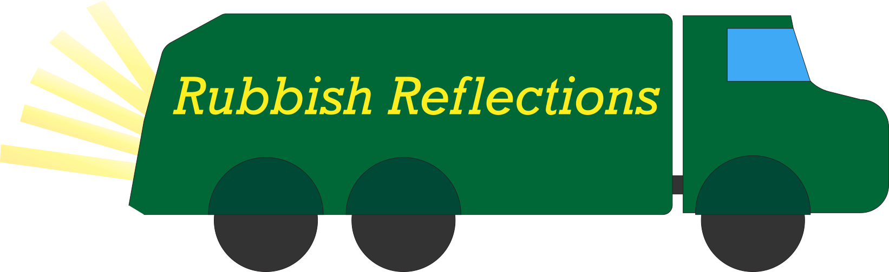
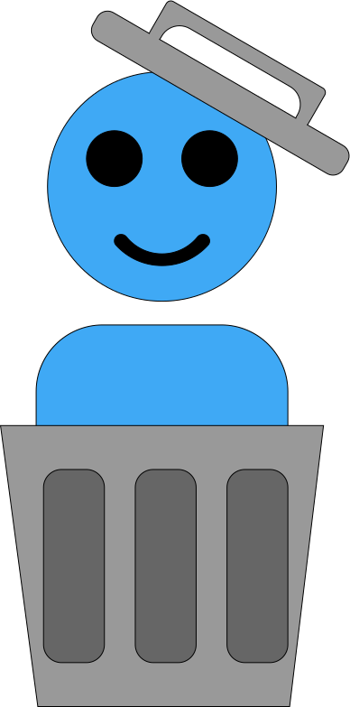

This project began with a simple thought: everyone makes trash, so who would care about mine? For most of my life, the waste I produced barely crossed my mind. I used objects, then they stopped working or I stopped needing them, so I threw them away. Like most people, I rarely thought about what happened next. As I’ve grown more conscious of the ways my everyday choices affect the world around me, I wanted to start paying attention to a process I had mostly ignored. This project serves as my attempt to slow down and observe the things that slip from my view and disappear from my mind the moment they leave my hands.
One of my goals for this project was to become more mindful of the trash I create. So, each week I document the items I’m throwing away as a means of reflection. By making my trash visible, I hope to become more aware of the patterns behind my trash-producing habits. Hopefully, this awareness will influence my future choices: thinking twice before buying something I may not need, considering whether something can be reused, or questioning the convenience of disposable products.
This project also functions as a kind of diary for me, and an archive for those to come. In a fast-paced world where days blur together, it can be difficult to pause and reflect on everyday life; it certainly is for me. Documenting my trash gives me a reason to stop and contemplate what’s going on in my week. The objects I discard often reflect the routines, stresses, and small events that shape my week. Years from now, I hope these entries will help me remember who I was at different points in my life, and that they will help those in the future catch a glimpse into the daily life of the past.
I must also recognize that I am not the first person to think seriously about trash. Many artists, scientists, and researchers have explored waste to understand human behavior and environmental systems. For example, artist Vik Muniz is known for creating large-scale artworks from discarded materials, transforming trash into images that challenge how we think about value and waste. Archaeological approaches to garbage have also revealed how much everyday trash can say about human societies; researchers like Sarah Newman have examined trash as a kind of cultural record. On a microscopic scale, scientists such as Kohei Oda study microorganisms capable of breaking down waste materials, offering insight into how nature might help address the growing problem of pollution.
This project is influenced by all of these ideas. It is both a reflection on and a documentation of my relationship with trash. By sharing my garbage each week, I hope to better understand my own habits and invite others to think about theirs as well.
Back to Top
Hi, my name is Oscar D. Grouch. I am currently a student in my third year at Trash U. (go Garbage Pails!), majoring in recycling studies. I am interested in examining the daily routines and rituals that shape modern trash-producing habits. I welcome all discussions about waste, sustainability, and the environmentally conscious decisions we can make every day. Along with these interests in trash, I am also in web design and web authoring. This project was a natural combination of my interests.
In my free time, I enjoy rummaging, sifting, and rooting through trash cans and landfills. I hope to work in the waste management industry in the future and purchase my dream home on Sesame Street. I hope this project has made you think more about your own garbage and the waste-producing activities of your life. If you’d like to learn more about me, feel free to follow me on my socials!
Back to Top